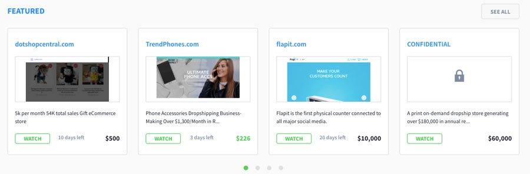

ขั้นตอนการซื้อและขายเว็บไซต์ก็เหมือนกับขั้นตอนการพลิกบ้านนั่นคือคุณซื้อบ้านที่มีศักยภาพในการลงทุนซ่อมแซมและขายเพื่อให้ได้กำไรที่สูงขึ้น

กระบวนการนี้ค่อนข้างตรงไปตรงมา แต่เพียงแค่รู้ว่ามีความเสี่ยงที่เกี่ยวข้อง ดังนั้นอย่าลงทุนเงินในไซต์ที่คุณไม่สามารถเสียได้
นี่คือวิธีที่คุณซื้อและขายไซต์เพื่อทำกำไร:
หากคุณสนใจที่จะสำรวจกระบวนการนี้ในเชิงลึกลองอ่านบทความและเรื่องราวความสำเร็จเหล่านี้จากผู้ใช้ Hostinger:
ฉันเปลี่ยนบล็อก WordPress ของฉันให้เป็นธุรกิจห้ารูปได้อย่างไร
20 แนวคิดสำหรับธุรกิจออนไลน์ด้านแรกของคุณ
10 ขั้นตอนในการสร้างกำไรในการซื้อและขายเว็บไซต์
ฉันจะสร้างกำไร $ 180,000 จากการซื้อและขายเว็บไซต์นอกเวลาได้อย่างไร
วิธีการซื้อและขายเว็บไซต์: คำแนะนำจากผู้เชี่ยวชาญเกี่ยวกับการเพิ่มผลกำไรของคุณ